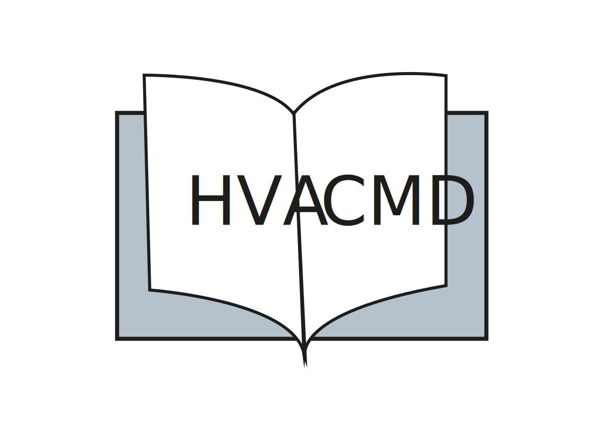
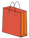

Over mij


Mijn naam is Loïs Althusius en ik studeer Communicatie en Multimedia Design aan de HvA.
Zelf heb ik ook meermaals gebruik gemaakt van thrift stores en omdat ik hier affiniteit mee heb, gaat mijn schoolopdracht hier over. Daarnaast lijkt het mij leuk om deze informatie met jullie te delen!
Mijn ervaring is dat je vaak redelijk goede kwaliteit items kan scoren, zonder dat dit je de hoofdprijs kost.
Zo kan je bijvoorbeeld designer items op voordelige wijze via een thrift store kopen als je niet veel te besteden hebt.
